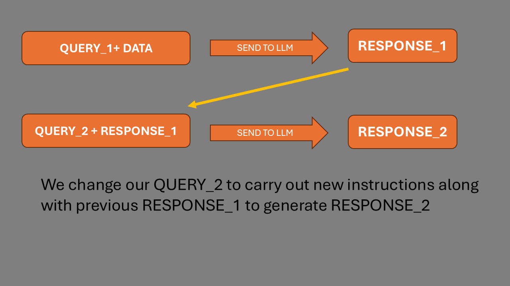

The repo is here:
or
https://github.com/Python-Test-Engineer/django-jpn
I will show you the repo and this is a mini-workshop effectively that can also be usedfor future reference.
And I will be using NOTES.md/NOTES.html for this talk so you can follow along with me. There will repetition of some information between my NOTES and the NOTEBOOKS to clarify matters.
The talk will be mostly code walkthroughs with notebooks that have a lot of comments for completeness and clarification.
I am one of US - a regular Pythonista.
Wrestling and getting to grips with these new technologies.
“It doesn’t get any easier - just different.” - Anon
I was in tech in the early 2000s as a Business Information Architect and Certified MicroSoft SQL Server DBA. I returned in 2017 via WordPress and JavaScript Frameworks, moving to Python and ML in 2021.
Currently, I am working on a project ‘AI Powered Knowledge Systems’, building a book/framework similiar to PyTest Full Stack.
My links:


I am a volounteer coach at codebar.io/brighton

and I also enjoy working in community kitchens and partner dancing.
Just got a Red Fox Labrador Pup Leo, (much earlier than planned):

We have a local red fox that is apt to follow us…
!
https://en.wikipedia.org/wiki/Punched_tape#/media/File:Creed_model_6S-2_paper_tape_reader.jpg
…cut and paste was cut and paste!
There are many definitions:


We will look at examples of code to see what AI Agents are and what they can do.
If we look at:
we can see that there are many examples of AI Agent Frameworks and they seem to increase each week.
What I would like to achieve in this talk is to demystify and simplify AI Agents and AI Programming because it can seem like it is another different world of dev.
What if AI Agents were ‘just’ Python code with a REST API call, admittedly a very magical API?
AI (Agents) as API…
Then, we would use day to day Python design patterns to handle the responses we get back from the AI Agent and move on to the next step. Business as usual for Python/Django developers.
This is the main focus of the talk - demystify and simplify - and this will enable you to create AI Agents and also construct workflows using AI Agents.
With that in mind, we don’t need to fully grasp the code this time around.
It is more about seeing the high level view and once can dig deeper into the code offline.
Look at the patterns and structure rather than the code details - it is what helped me get to grips with this new paradigm.
We will use Notebooks to explore AI Agents and then we will see an implementation of an AI Agent in Django, using the same code.
It is the same code that produces the same output for us to use in our Django App. There is not extra ‘wiring’ involved to use AI Agents in Django.
There is a demo and sample code to illustrate the FAQ use case which we will see later.
Like getting data back from the database, we get data back from an LLM request to use as we wish.


I like to use the metaphor of the upside down computer mouse. When we try to use it, it can take while to reverse our apporach. It is still the same set of movements - left, right, up and down - but in the opposite way to the way we are used to.
There are 3 areas concerning Agentic AI in my opinion:
For the purpose of this talk I will use the term
function in the mathematical sense:

The function might be a Python function or a class.
Before we go into some code examples, we will refresh ourselves that a REST API a request is sending a payload of data to a server and then the server returns a response.
This is a very simple example of a REST API.
Again, this is to demystify and simplify any libraries we may import for convenience functions.
Authentication takes place by passing some sort of token to the server, usually in the headers:
model = "gpt-3.5-turbo"
model_endpoint = "https://api.openai.com/v1/chat/completions"
## There is no reference to previous requests to maintain a history - we must supply the history with each request.
headers = {
"Content-Type": "application/json",
"Authorization": f"Bearer {api_key}",
}
# payload may vary from LLM Organisation but it is a text string.
payload = {
"model": model,
"messages": [
{"role": "system", "content": system_prompt},
{"role": "user", "content": user_prompt},
],
"stream": False,
"temperature": temperature,
}
# Use HTTP POST method
response = requests.post(
url=model_endpoint, # The API
headers=headers, # Headers for authentication etc
data=json.dumps(payload) # The request data we are sending
).json()
# KEY TAKEAWAYs
## There is only one endpoint. We don't use other endpoints for differing tasks, there is just one end point and we will create our custom endpoint through prompt engineering.
The request is text and does not contain any objects or other data types.
Likewise, we get a text response. We pass some text to a function and get some text back.
We will look at 01_openai_api_with_requests.ipynb to see
an example of getting a response from the LLM.
01_openai_api_with_requests.ipynb.
In 02_api.ipynb, we can see that we can get a joke from
a regular API endpoint, with the assumption that there is no AI
involved!
We can also ask OpenAI to tell us a joke…
What if we want a more complex API endpoint/route?
Let’s say we want to get a joke, get a rating as well as a verdict on whether it is worthy of publishing or whether a HUMAN should make the joke for publishing.
We can do this by using a prompt.
The prompt is the input to the AI agent.
The prompt can be considered to be the API route we are creating and it it will be in Natural Language.
Let’s look at this file…
We can see this in 02_api.ipynb where we pass a system
prompt and then a prompt to create this endpoint, specifying how we want
the data returned.
This is effectively a new route for the API, but instead of it being coded on the server side by someone, it is coded on the client side, sent with the payload AND the code is NATURAL LANGUAGE.
In the early days of ChatGPT, prompt engineering was often shownd as hacks or tricks. Nowdays, it seems far more structured and different LLMs use different schemas.
(Current models are ‘Imperative’ in that we say what they are, what they do, how they do it…New REASONING models are ‘Declarative’ in that we say what we want them to do - the goal - what we want as output and what we might not want. The model then ‘reasons’ its way through the task.)
We can think of it as pseudo-code which we may write whilst developing an app.
In fact, it is like a person starting a new job. They will get a
handbook of what the job involves, how to do it etc. and this is what we
are doing with the LLM. sample_prompt.md is an example of
this and how we could import content from a Markdown file.
We set the system prompt to guide the AI agent, and then the prompt to create the endpoint.
We can have more information than necessary and this can do no harm provide it is consistent and logical with the remaining prompt. Obviously, there will be more token usage but with the price going down, it is not an issue.
We have covered 2/3 of the AI reverse process - Client Side creation of the route and the use of Natural Language.
What about Autonomy?
In our output, we asked the LLM to give not just a rating but a
verdict on whether it is worthy of publishing or not. This is the
next parameter that is returned. This is our own creation
and we can have any key name.
There are many software design patterns but essentially the next step
in the app has been selected by the LLM. It is the if/else
statement. or router.
In summary, this module has shown the 3 counter-intuitive steps of AI Agents - Autonomy, Client Side Creation of the route and the use of Natural Language.
Sometimes we might think that AI Development is binary - it is fully AI or not.
What if we can include ‘a bit of AI’ in our App? Remember, AI Agents are snippets of code that make a request and get a response.
If we have a Search, FAQ or Help section, we can leverage the power of the AI Agent to create a facility to process Natural Language. Getting information from a form, (excluding text fields), give us structured input data and one text field may be used for the query as natural language input to be resolved by the AI Agent.
Let’s look at 03_faq.ipynb for a simple example. (We
will see this in our Django demo and it is a view receiving some text
and processing it to give text back to the user via a view).
I am using Gradio as a UI for this example notebook and we can see that we have some data in the FAQ list.
Obviously, this can be more involved and use structured inputs from associated form fields, but for now lets assume that we have extracted the relevant information.
This highlights an important point that we don’t need to use LLMs for Agents. If we can get structured data from a form, then it is more deterministic and better. LLMs are very useful for converting Natural Language inputs to structured data.
This is RAG or Retrieval Augmented Generation, where we ‘augment’ the query with the relevant data that the model was not trained on and then the LLM ‘generates’ the response based on the query, the data and the prompt. We tend to see RAG with vector databases and semantic search but RAG is essentially augmenting the LLM with our own data to ‘train’ it or ‘fine tune’.
We can see that we can create a powerful AI Agent that can answer questions based on the data in the FAQ list.
Let’s look at how this is done in Django.
To keep the code similar tot he notebook, we will look at the
chatbot app and the views.py file.
There is a refactored version using HTMX in the
chatobt_app app.
I have already logged in so we can see the chatbot app
in action as well as the chabot_app version.
The key takeway is that the Django implementation is very similar to the notebook implementation with no special wiring involved.
We can further extend this to be a type of ROUTER or if/else statement to provide a sense of autonomy to the app - it will direct the flow of the app. We can have ‘Human in the Loop’ at any stage so that we restrict the flow to approved paths.
We know the overall workflow of the app but not how it goes from beginning to end. We no longer micro-manage the app but delegate steps to the AI Agent, very much like we might manage a team member - mciro-manage or use delegation.
In this example, we can let the AI Agent decide the next step to take.
This was an example I had at a codebar coaching session where a student wanted to get a job in AI/Python.
I asked if they had an AI department where they currently worked and they said NO.
When I asked what they did, they would be the person people went to for help in deciding which report to run and then they would run it and send them the final report.
I said to them that they could create an AI version of themself for when they were away. The app could offer a chatbot type interaction, along with a set of structured form fields like date-to etc and then select the best report and run it.
When they said “And replace me out of a job!” I said “yes..you will have a new job as head of the AI dept team”.
Let’s look at 04_agent_router.ipynb as a very basic
example of what they could do…I have included additional non-relevant
reports/actions for demonstration purposes.
We have not yet seen a multi agent scenario but I would describe this as everyday Python where we can use a range of Software Design Patterns like Author, Pub/Sub, Finite State Machine etc.
We will take a look at this later.
I think we can see that what we call these things - Agents, Tools, Routers, Functions - is quite arbitrary and merely a convenience for what works for us. At the end of the day, everything in Python is an OBJECT, so we can use whatever we want.
AI Agents may need to get extra information by running functions. This is called ‘tool/function calling’ and is just a function call as in regular Python.
We can get the LLM to not just select a tool but also extract the
arguments. We will see information extraction in
06_information_extraction.ipynb.
05_tools.ipynb shows not just how we define tools but
also how an Agent can decide which one to use, as well as the arguments
for the function.
It will then send back the function name and arguments for us to run and then return the result.
Where is it run?
Function is run on our ‘box’ - we continue to add messages to our list of messages and send them to the LLM.
We can use the LLM to extract data from a document. This is called
‘information extraction’. We will see this in
06_information_extraction.ipynb.
I bring this up again as I came across this extraction pattern in an example of ‘Teachable Agents’. This sounded very futuristic but looking at the code, it is information extraction that can be stored in short term memory - app level cache - or long term menory - stored in a DB for example and retrieved as needed and added to the SYSTEM MESSAGE.
Examples show this for data pipelines, however, if it were part of an invoicing process one would more likely have the information stored rather than in a prepared document.
Andrew Ng describes four main patterns
https://www.deeplearning.ai/the-batch/how-agents-can-improve-llm-performance/

We have seen examples of these in this talk, bar a multi-agent pattern.
input -> function(input) -> output -> function(output) -> output2
We generate a response with our first query using a system prompt to create code.
We then pass the output into another function that acts as a reviewer to produce the next version of the code.
Many times when we use ChatGPT say, we ask for it to refine its previous answer. This is the Reflection pattern where we send the previous response and then ask it to refine it.
In fact, it is like RAG. The first request generates some content, which we then add to the next request which has a system prompt of being a critique.
We can repeat this as many times as we want, adding previous responses to the next request.
15_reflection_pattern.ipynb shows how we can use this
pattern.
We have seen Tool Calling previously.
A powerful pattern is the ReAct (Reason-Act) pattern.
This can be viewed of as Multi-Step. Let’s go through the code.
To get a sense of how it works, look at
20_planning_agent_w_loop.py as we can get a high level
overview of the code, whereas
20_planning_agent_no_loop.ipynb needs more of a walk
through.
I like to think of Libraries as frameworks without the framework! By this I mean we get building blocks to help us build things without having to conform to a building plan.
Pydantic is well known in everyday Python and is used by most AI Agent frameworks as structured data validation is vital.
PydanticAI is a library/framework that uses Pydantic to create AI Agents.
HF SmolAgents is a library/framework that uses Huggingface Transformers to create AI Agents. It has broken new ground throught the use of its CodeAgent where tool calling is done via Python rather than JSON…show images…
Crews and Swarms are design patterns for MultiAgent collaboration. They each have their own use cases and we saw earlier that AI Agents can emit the ‘next’ step in the app which a range of desing patterns can harness.
There are many frameworks and libraries that can be used to create AI Agents. Some are more focused on the AI Agent and some are more focused on the UI.
LlamaIndex Langchain Langraph AutoGen CrewAI
And there are many low/no code versions as we saw in the AI Agents Directory
I hope AI Agents have been demystified and helped us understand what they can do, enabling us to either build our own frameworks or use existing ones, with a deeper appreciation and understanding of how they work.